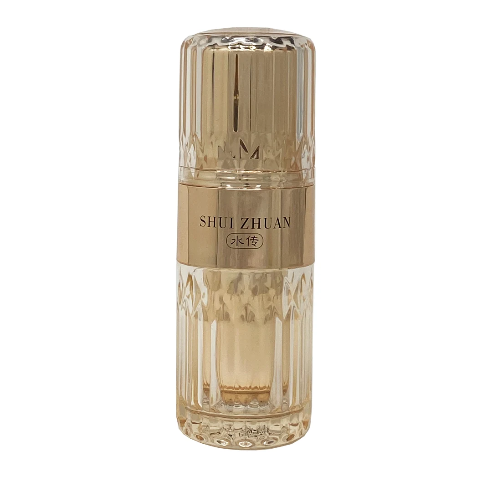

Beauty
& Revival
Магазин
Волосы
Лицо
Бренды
№ 01 / Коллекция для волос
CAVIAR
PURE.
Шампунь и маска с экстрактом икры от SHUI ZHUAN.
К коллекции
↗
SHUI ZHUAN
Уход за волосами / 500 мл
Beauty & Revival
✦
Студия красоты и эстетики
✦
Санкт-Петербург
Витрина / 01
Выбор студии
Открыть каталог ↗
№ 01
SHUI ZHUAN
Шампунь с экстрактом икры
4 000 ₽
500 мл
№ 02
SHUI ZHUAN
Питательная маска для волос
4 000 ₽
500 мл

№ 03
SHUI ZHUAN
Крем-эссенция для век
4 400 ₽
30 мл
№ 04
WANLI BUTTERFLY
Ночная маска с орхидеей
5 100 ₽
50 мл
BEAUTY & REVIVAL
Санкт-Петербург · Радищева, 18
 № 01
№ 01 Beauty№ 01
Beauty№ 01 № 02
№ 02 № 04
№ 04